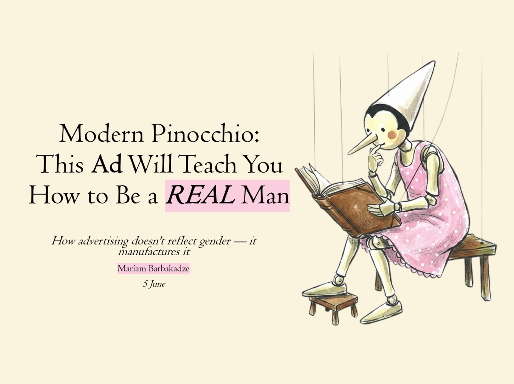
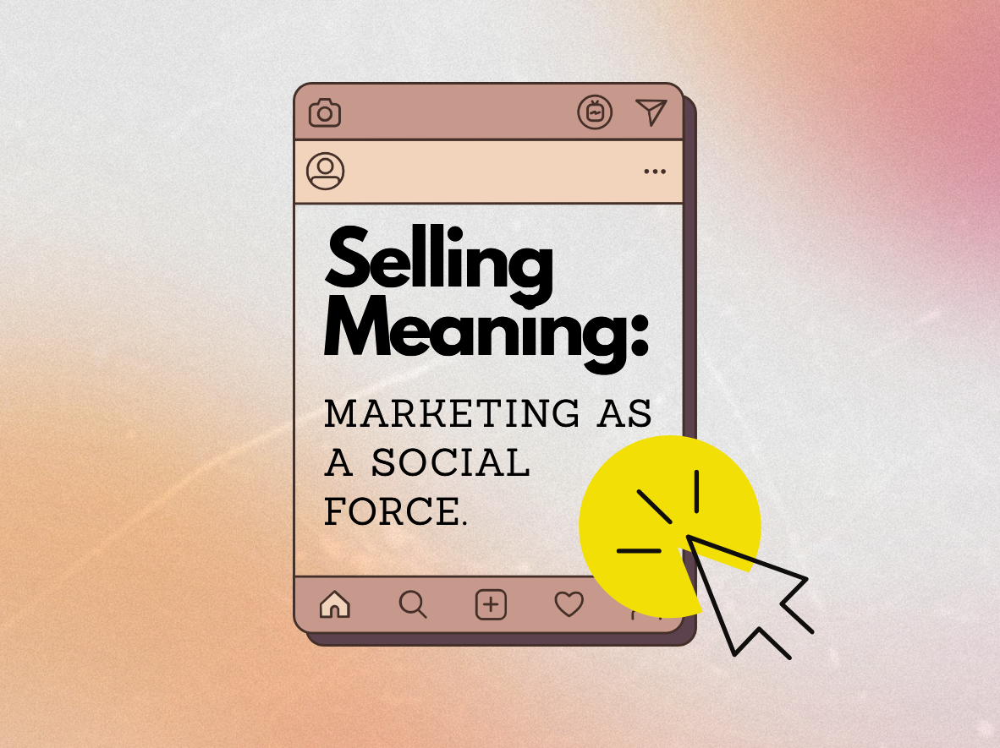
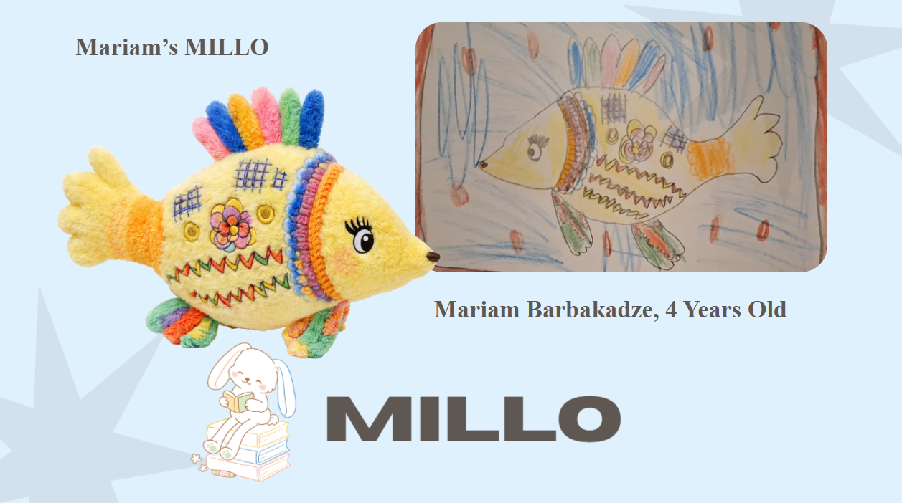
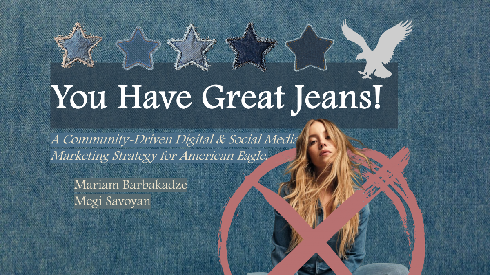
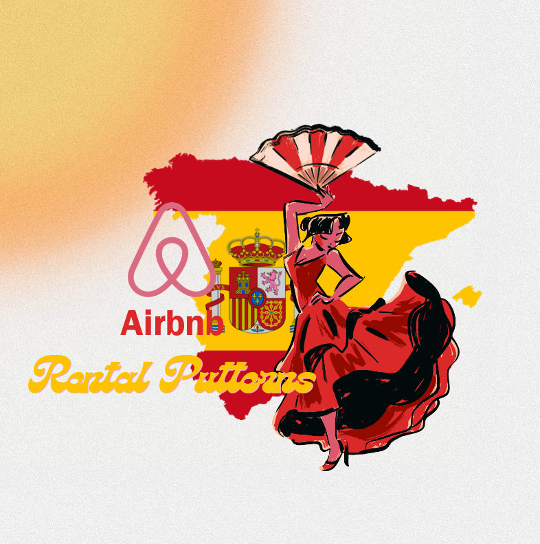
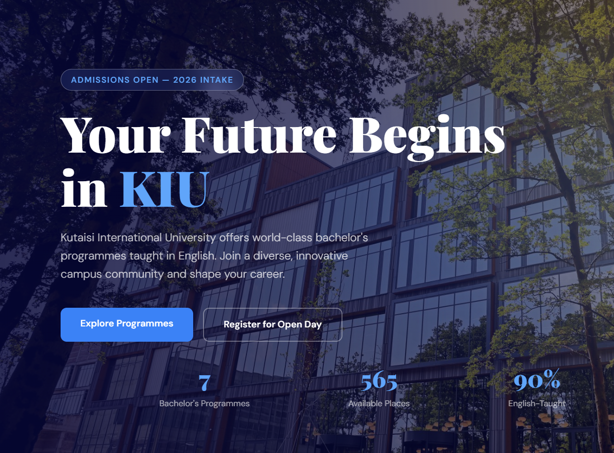
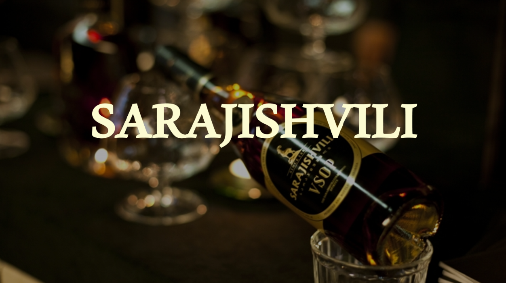
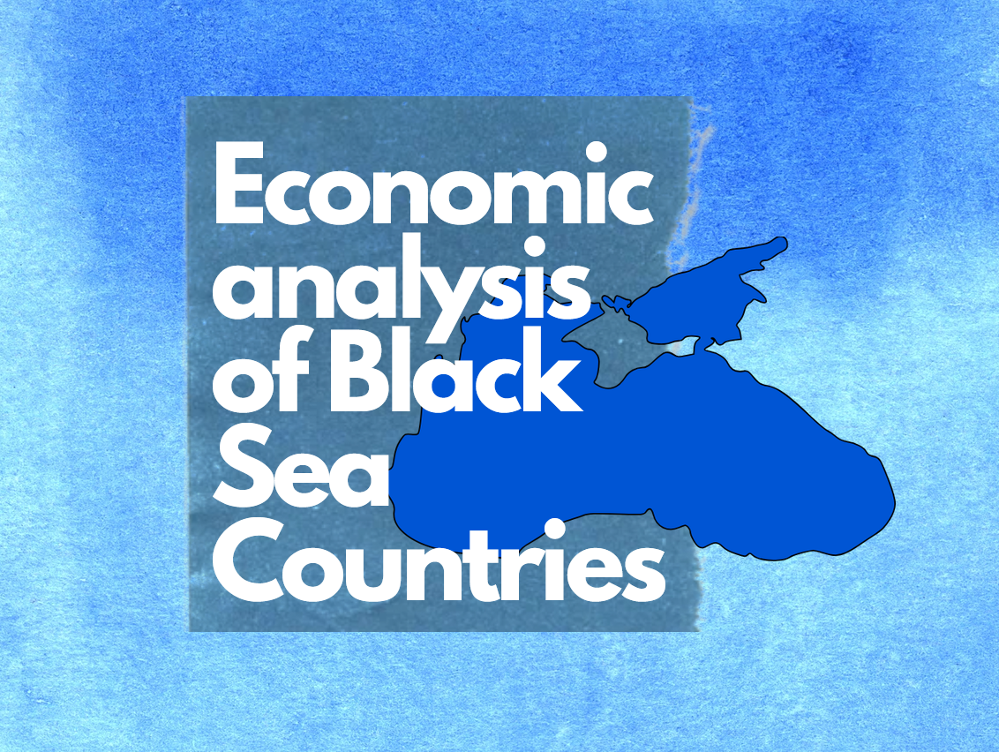
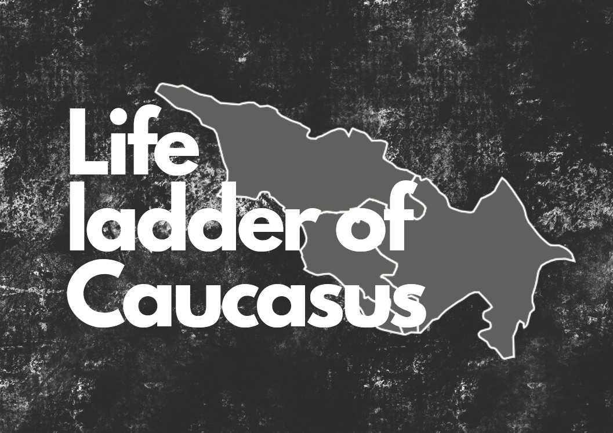
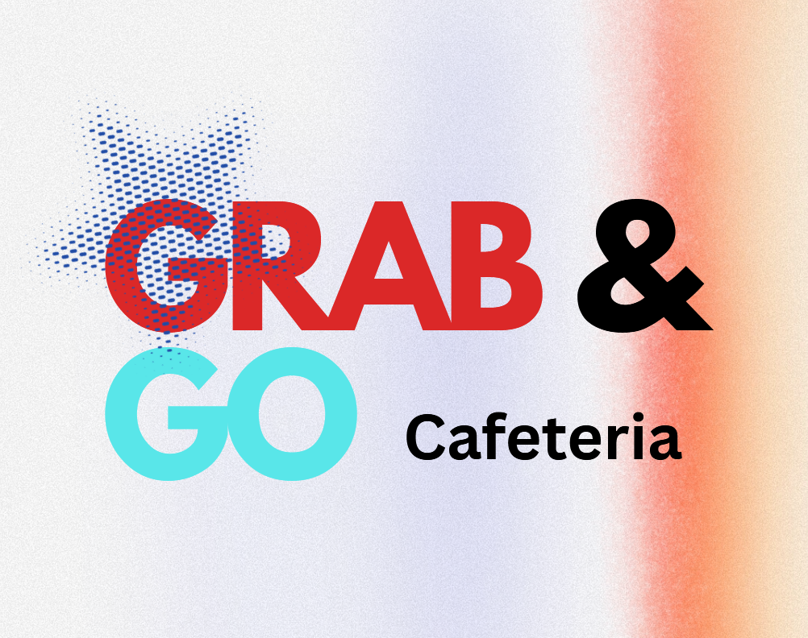

თანამედროვე პინოქიო: ეს რეკლამა გასწავლის როგორ გახდე ნამდვილი მამაკაცი
საკონფერენციო ნაშრომი და კვლევა თუ როგორ ამკვიდრებენ რეკლამები გენდერულ სტერეოტიპებს და რას ფიქრობენ ამაზე ქართველი ახალგაზრდები.
 მარიამ ბარბაქაძე
მარიამ ბარბაქაძე
მენეჯმენტის სტუდენტი მარკეტინგის კონცნტრაციით GPA: 3. 78
Press Space or ↑ to jump, ↓ to drop fast. On a phone, tap the game.
.png)
მე ვარ მარიამ ბარბაქაძე, 21 წლის. ვსწავლობ ქუთაისის საერთაშორისო უნივერსიტეტში მენეჯმენტის ფაკულტეტის მე-4 კურსზე, მარკეტინგის კონცენტრაციითა და კომპიუტერული მეცნიერებების მაინორით. GPA: 3.78 დაინტერესებული ვარ მარკეტინგული კომუნიკაციებით, მომხმარებელთა ქცევითა და სტრატეგიული კომუნიკაციებით.
ვქსოვ, ვქარგავ, ვუკრავ ფანდურზე და ვცდილობ უფრო მეტი გზა ვიპოვო თავის კრეატიულად გამოსახატად. ვიტყოდი, რომ მაქვს განვითარებული ანალიტიკური, ორგანიზაციული და პრობლემების გადაჭრის უნარები. გამოცდილება მაქვს სტუდენტთა მენტორობაში, უნივერსიტეტური ინიციატივების კოორდინაციასა და სხვადასხვა მიმართულების გუნდებთან თანამშრომლობაში.

საკონფერენციო ნაშრომი და კვლევა თუ როგორ ამკვიდრებენ რეკლამები გენდერულ სტერეოტიპებს და რას ფიქრობენ ამაზე ქართველი ახალგაზრდები.

კვლევა, თუ როგორ იყენებს მარკეტინგი პროდუქტებსა და სიმბოლოებს სოციალური ნორმების, კულტურული ღირებულებებისა და მომხმარებელთა ქცევის ფორმირებისთვის. განვიხილე Coca-Cola-ს Santa Claus, De Beers-ის ბრილიანტები, გენდერული ფერები და სხვა მაგალითები.

MILLO არის პერსონალიზებული საგანმანათლებლო პროდუქტი, რომელიც ბავშვის ნახატს სათამაშოდ აქცევს და მას ციფრულ საგანმანათლებლო კონტენტს უკავშირებს. Millo-სთვის შევიმუშავეთ პროდუქტის კონცეფცია, ბიზნეს და მარკეტინგული სტრატეგია და ფინანსური გათვლები.

Sydney Sweeney-ის დენიმის კამპანიის გაუმჯობესების მცდელობა, რომელიც ერთი კონკრეტული ტიპის გენეტიკის ნაცვლად ჯინსების ისტორიასა და მათი მომხმარებლების მრავალფეროვნებაზე ფოკუსირდება. ახალი კამპანიის კონცეფცია, STP, PESO მოდელი, კონტენტ კალენდარი და KPI-ები

Power BI პროექტი, გუნდთან ერთად გამოვიკვლიე ბარსელონას, მადრიდისა და ვალენსიის მოკლევადიანი ბინებით გაქირავების ბაზარი ფასების სტრატეგიების, მოთხოვნის ტენდენციებისა და ლოკაციებს შორის განსხვავებების მიხედვით.
ჩამოტვირთე ფაილი
ქუთაისის საერთაშორისო უნივერსიტეტის საინფორმაციო ვებგვერდის Frontend დიზაინი. პროექტში გამოვიყენე HTML, CSS და JavaScript, მათ შორის DOM, Fetch API, Async/Await, Local Storage და Session Storage.
გადადი ვებსაიტზე
სარაჯიშვილის ბრენდის შესახებ მარკეტინგული პროექტი, რომელიც კომპანიის ისტორიას, პროდუქტებს, ტექნოლოგიასა და ბრენდის პოზიციონირებას იკვლევს. პროექტის ფარგლებში შევიმუშავეთ მარკეტინგული ხედვა და შევქმენით სარეკლამო ვიდეო
კვლევა აჩვენებს, რომ ბიტკოინი უფრო დივერსიფიკატორის როლს ასრულებს, ვიდრე სტაბილური ჰეჯირების ან უსაფრთხო აქტივის. მისი მაღალი მერყეობა და კრიზისების დროს აქციებთან დაკავშირებული მოძრაობა „ციფრული ოქროს“ სტატუსს ნაკლებად ამყარებს.
რეპორტი
R studio პროექტი, გუნდთან ერთად გავაანალიზე ექვსი ქვეყნის GDP, ეკონომიკური ზრდა, ფულადი გზავნილები და მოხმარება. ფოკუსირდი საშუალოზე მაღალი და მაღალი შემოსავლის მქონე ქვეყნებში ფულად გზავნილებზე დამოკიდებულების შედარებაზე. გამოვიყენე R მონაცემების გასაწმენდად, ვიზუალიზაციისა და შედარებითი ანალიზისთვის.
იხილე კოდი
excel პროექტი, რომელიც იკვლევს, თუ როგორ უკავშირდება GDP ერთ სულ მოსახლეზე, სოციალური მხარდაჭერა, ცხოვრებისეული არჩევანის თავისუფლება, ჯანსაღი სიცოცხლის ხანგრძლივობა და გულუხვობა კავკასიის ქვეყნების Life Ladder-ის მაჩვენებლებს 2006–2019 წლებში. ასევე, აანალიზებს ამ ფაქტორების ერთობლივ გავლენას თითოეული ქვეყნის ცხოვრების შეფასებაზე.

გუნდთან ერთად შევისწავლე სტუდენტების მოთხოვნები და მათზე დაყრდნობით შევიმუშავე კამპუსის Grab&Go კონცეფციის მენიუ და მოთხოვნის პროგნოზი. ასევე, Excel-ში შევქმენი ხარჯებისა და ფინანსური ანალიზის მოდელი, რომელიც მოიცავდა თვითღირებულებას, ფასებს, CVP ანალიზს, მოგებიანობასა და ფინანსური ანგარიშგების შეფასებას.
პრეზენტაცია excel ფაილი1-3 / 11

მონაწილეობა მივიღე KIU-ს საფეხბურთო ჩემპიონატის დაგეგმვასა და განხორციელებაში, ვკოორდინირებდი პროცესებს და ვთანამშრომლობდი მონაწილეებთან. გუნდის წევრებთან ერთად დავგეგმე ჩემპიონატის პოპულარიზაციისკენ მიმართული სარეკლამო კამპანია.

ვეხმარები სტუდენტებს აკადემიურ და პროფესიულ განვითარებაში, ვუზიარებ გამოცდილებას და ვუწევ მხარდაჭერას. ღონისძიებებზე წარმოვადგენდი მენეჯმენტის სკოლას და ვქმნიდი მისი მარკეტინგული/PR წარდგენის მეთოდებს.
სახელმწიფო სტიპენდია მომენიჭა მაღალი აკადემიური მოსწრებისა და სტუდენტურ აქტივობებში აქტიური მონაწილეობისთვის.
სახელმწიფო სტიპენდია მომენიჭა მაღალი აკადემიური მოსწრებისა და სტუდენტურ აქტივობებში აქტიური მონაწილეობისთვის.
KIU სტიპენდია მომენიჭა მაღალი აკადემიური მოსწრების გამო.
გავიმარჯვე მულტიკულტურალიზმის თემაზე ნაშრომის წარდგენით, რომელშიც წარმოვაჩინე კულტურების თანაარსებობისა და ურთიერთპატივისცემის მნიშვნელობა.